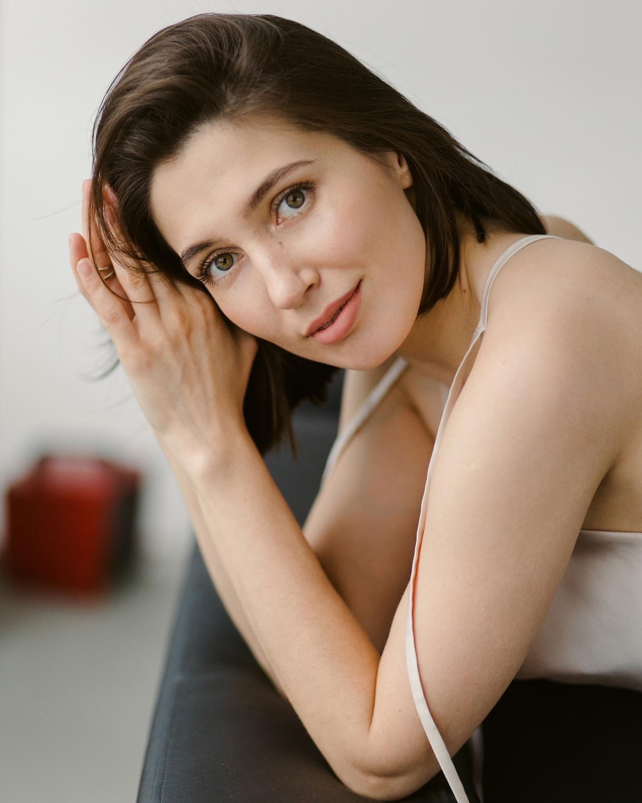

Первая встреча
Встречаемся вместе: знакомимся, проясняем ваш запрос и то, что сейчас происходит в паре.
ФОРМАТ РАБОТЫ
Работа для пар, которым важно лучше понимать друг друга и строить более безопасный, живой контакт.

ЗАПРОСЫ
На встречах не нужно решать заранее, кто прав. Мы вместе смотрим на то, что происходит между вами.
В РАБОТЕ
Не бороться друг с другом, а видеть цикл, который отдаляет вас друг от друга.
Эмоции
Учимся распознавать эмоциональные реакции и понимать их смысл.
Привязанность
Замечаем потребности в близости, стоящие за конфликтами и дистанцией.
Контакт
Строим контакт с собой и друг с другом более безопасным и живым способом.
ПРОЦЕСС
Встречаемся вместе: знакомимся, проясняем ваш запрос и то, что сейчас происходит в паре.
Встречаюсь отдельно с каждым партнёром, чтобы лучше понять личный опыт и контекст отношений.
Снова встречаемся вместе и начинаем совместную работу с тем, что происходит в ваших отношениях.
Дальше мы всегда работаем вместе. Одна встреча длится 60 минут, весь процесс занимает около 20 встреч.
ВАЖНО ЗНАТЬ
Мой подход в парной терапии вряд ли подойдёт вам, если вы ищете психолога, который:
В терапии мы не пытаемся сделать одного партнёра удобнее для другого.
Поэтому работаем не с вопросом «как мне его или её исправить?», а с вопросами: «что на самом деле происходит между нами?», «что каждый из нас привносит в эти отношения?» и «как нам быть с тем, что есть?»
Если хочется обсудить
вашу ситуацию.